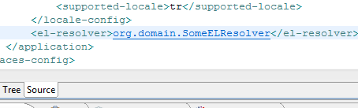

< Main Index Hibernate Tools News >
faces-config.xml Editor |
|
|
openOn |
EL Resolver can now be navigated to via OpenOn's from faces-config.xml.  |
OpenOn for id referencing attributes |
|
|
OpenOn for id referencing attributes |
We now support navigating from i.e. This OpenOn works for a long range of tags and attributes, thus if you have an attribute that refer to an id it should now work. If not, let us know so we can extend the support. |